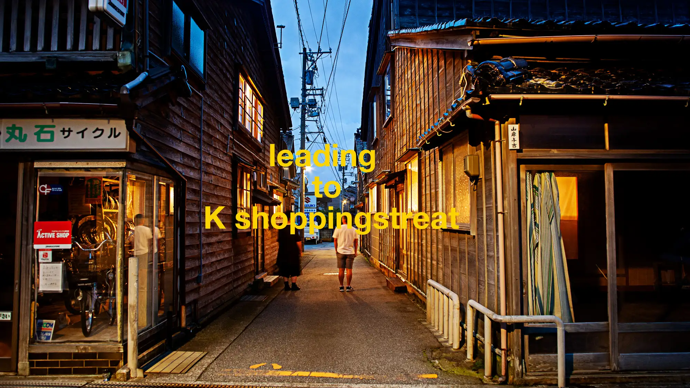
leading to K shoppingstreat
2020
KANAIWA ONO ART PROJECT, Artist in Residence, 21st Century Museum of Contemporary Art, Kanazawa JAPAN
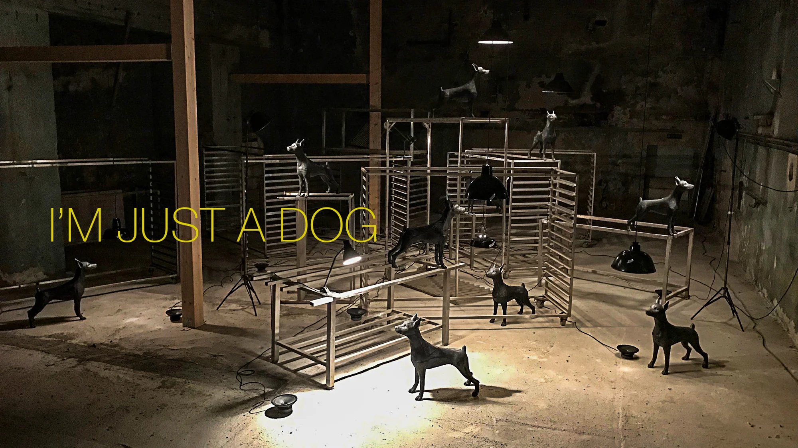
I'M JUST A DOG
2019
OPEN STUDIO, Berlin GERMANY
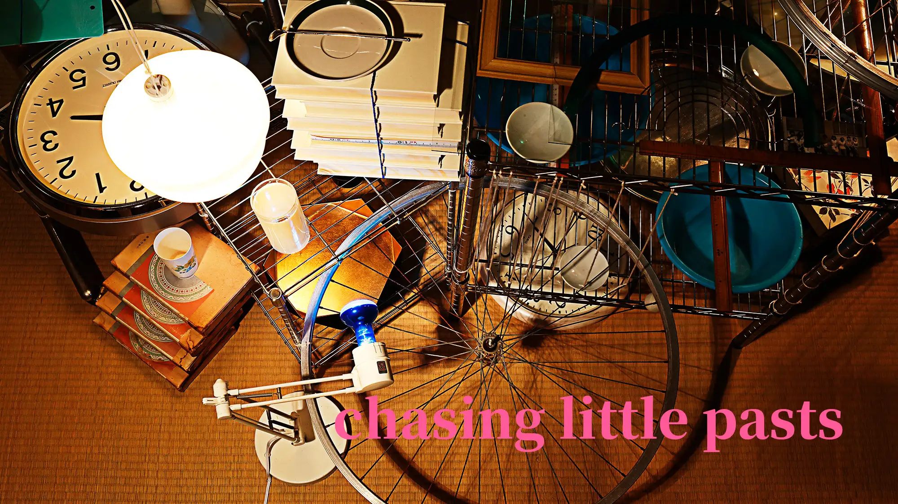
chasing little pasts
2018
Culture City of East Asia 2018 Kanazawa "Altering Home", 21st Century Museum of Contemporary Art, Kanazawa JAPAN
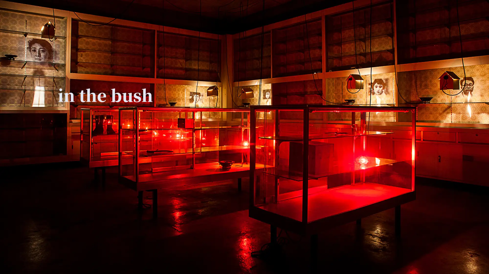
in the bush
2017
NAKANOJYO BIENNALE 2017, Gunma JAPAN
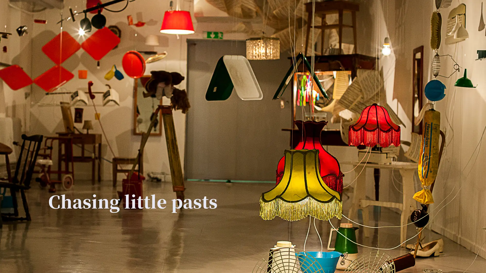
chasing little pasts
2017
OPEN ART, Orebro SWEDEN
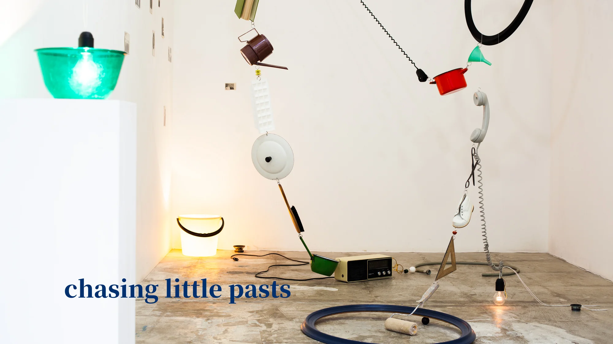
chasing little pasts
2016
LAD Gallary, Aichi JAPAN
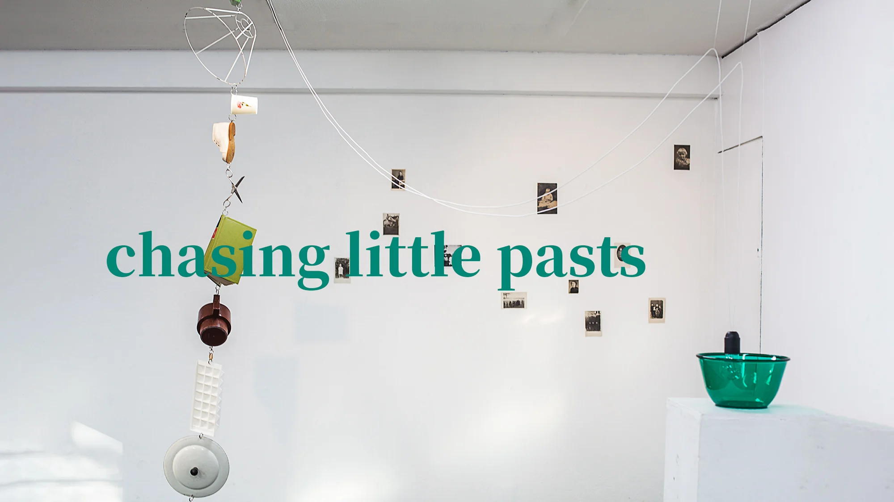
chasing little pasts
2016
TITANIK Artist in Residence, Turuk FINLAND
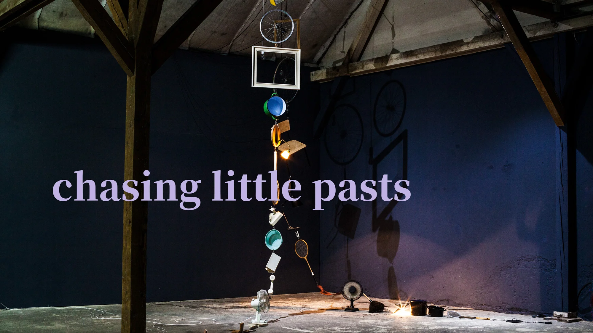
chasing little pasts
2016
OSTRALE, Dresden GERMANY

chasing little pasts
2015
NAKANOJYO BIENNALE 2015, Gunma JAPAN
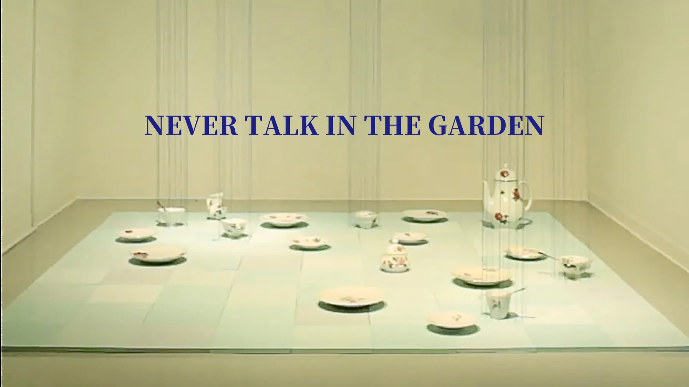
never talk in the garden
2015
TOKYO WONDER SITE, Tokyo JAPAN

chasing little pasts
2014
Kunstraum Kreuzberg/Bethanien TWS artist in residence, Berlin GERMANY
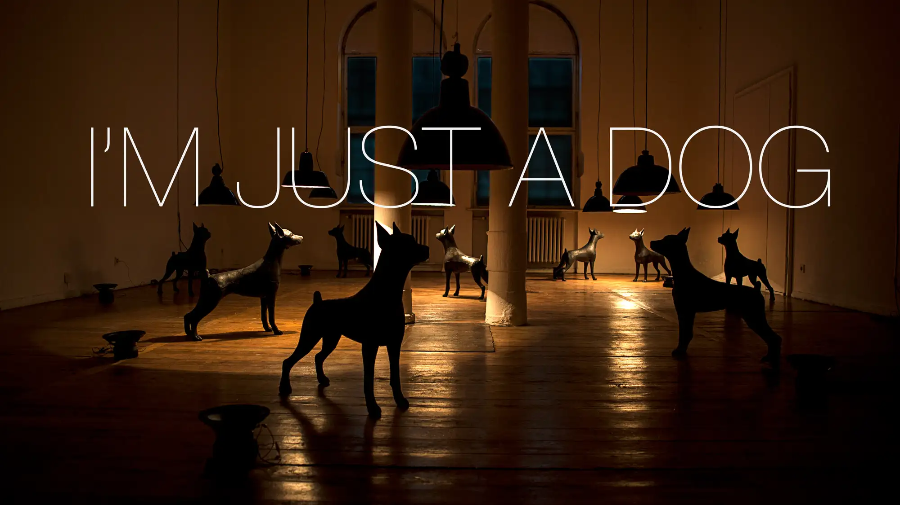
I'M JUST A DOG
2014
Kunstraum Kreuzberg/Bethanien TWS artist in residence, Berlin GERMANY
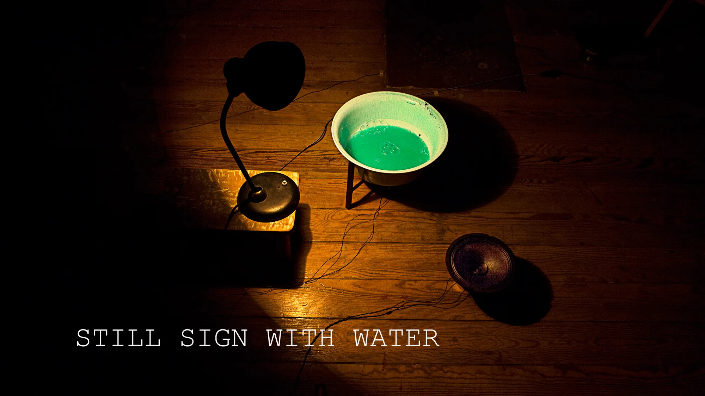
still sign with water
2014
Kunstraum Kreuzberg/Bethanien TWS artist in residence, Berlin GERMANY
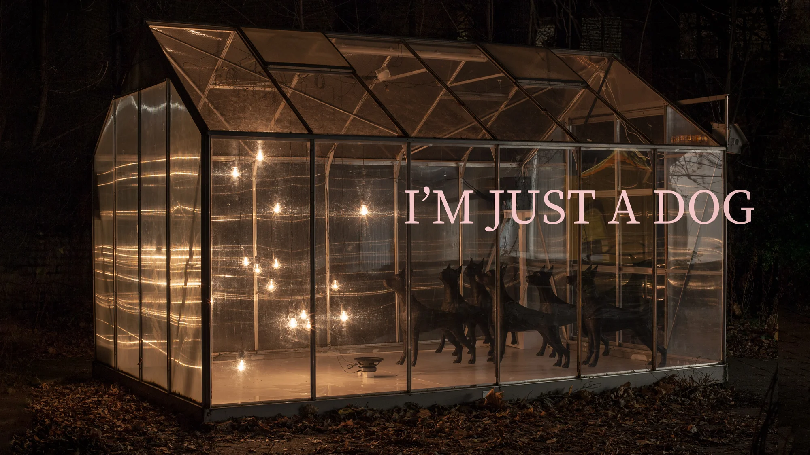
I'M JUST A DOG
2013
Superbien!, Berlin GERMANY